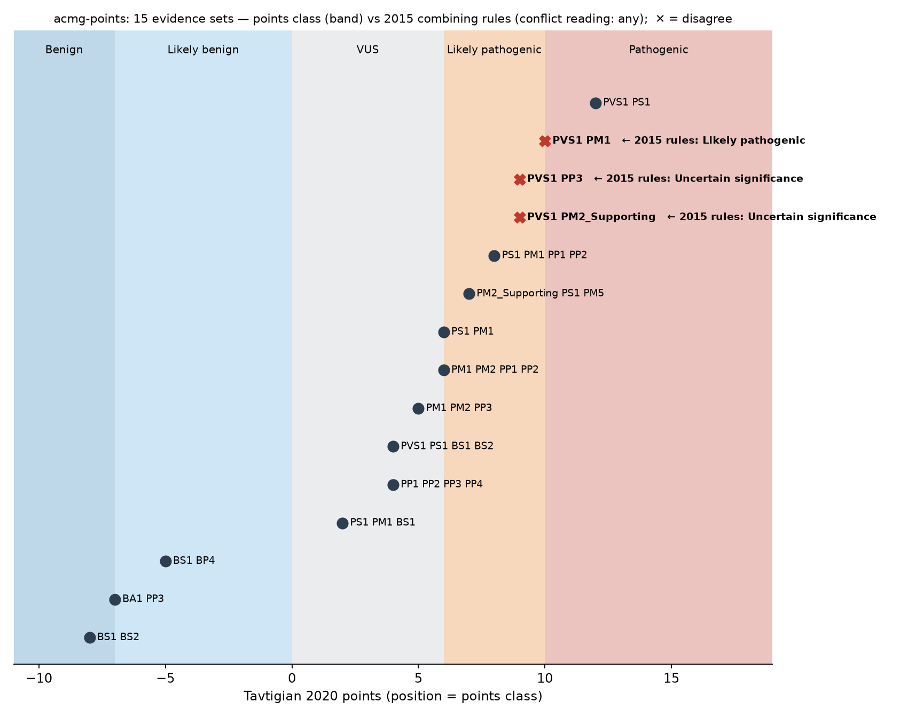

acmg-points

Points-based ACMG/AMP variant classification, side by side with the 2015 combining rules — so you can see exactly where the two systems disagree on your evidence.
ClinGen is moving variant classification from the 2015 combining rules to a points system (Tavtigian 2020, the basis of the forthcoming SVC v4). Most labs still reason in 2015 rules; most calculators implement one system or the other. acmg-points runs both on the same evidence and flags the disagreements, with the provenance of every point.
pip install git+https://github.com/MargoSolo/acmg-points # no dependencies
acmg-points classify PVS1 PP3
PVS1 VeryStrong +8
PP3 Supporting +1
total +9 → Likely pathogenic [tavtigian2020]
2015 rules → Uncertain significance (no 2015 combining rule met)
⚠️ SCHEMES DISAGREE
Where the systems disagree
Fourteen evidence sets from examples/cases.txt, placed on the points scale; the band gives the points class, and ✕ marks the sets where the 2015 rules say something else:

Three patterns worth knowing before a lab switches systems:
| evidence | points | points class | 2015 class | why |
|---|---|---|---|---|
| PVS1 + PM2 | +10 | Pathogenic | Likely pathogenic | 2015 needs PVS1 + ≥ 2 Moderate for Pathogenic; points reach 10 with one |
| PVS1 + PP3 | +9 | Likely pathogenic | VUS | 2015 needs ≥ 2 Supporting next to PVS1; points need one |
| PS1 + PM1 + BS1 | +2 | VUS | Likely pathogenic | a lone benign Strong is invisible to the 2015 pathogenic rules; points subtract 4 |
Points resolve conflicting evidence by arithmetic; the 2015 rules only fall back to VUS when both a pathogenic and a benign rule are met. Full table: examples/compare.md.
Use
acmg-points classify PVS1 PM2_Supporting PP3 # modified strengths: CODE_Strength (also CODE:Strength, CODE-Sup)
acmg-points classify PS1 PM1 --json # per-criterion points and both verdicts, machine-readable
acmg-points compare --file cases.txt # one evidence set per line, '#' comments → markdown table
acmg-points table # the scheme in force, with citation
Supporting Moderate Strong VeryStrong (Sup/Mod/Str/VS), StandAlone for BA1. Applying a criterion twice is an error.
What is implemented — and what deliberately is not
flowchart LR
E["applied criteria<br/>PVS1 · PM2_Supporting · BS1 …"] --> P["points<br/>Tavtigian 2020<br/>+1 +2 +4 +8 / −1 −2 −4 −8, BA1 = −8"]
E --> R["2015 combining rules<br/>Richards 2015, Table 5<br/>counted at applied strength"]
P --> V[both verdicts · disagree flag · JSON]
R --> V
- Points: Tavtigian et al. 2020, Hum Mutat 41:1734. Bands: Pathogenic ≥ 10 · Likely pathogenic 6–9 · VUS 0–5 · Likely benign −6…−1 · Benign ≤ −7.
- 2015 rules: Richards et al. 2015, Genet Med 17:405, including the conflict rule. Criteria count at their applied strength (
PM2_Supportingis a Supporting criterion), as ClinGen SVI modifiers intend. - Not implemented on purpose: any "SVC v4.0 points table". v4 is in pilot and unpublished. Schemes live in one file,
schemes.py; when the official table appears it becomes a second scheme, not a rewrite.
This is a combiner, not a classifier: it assumes you have decided which criteria apply at which strength. It does not assess evidence, query gnomAD, or know VCEP gene-specific specifications. It will also happily sum criteria that should not be co-applied (e.g. PVS1 with PM4) — mutual-exclusion checks are on the roadmap.
Tests
Five pytest cases pin the published bands, the strength modifiers, the 2015 conflict rule and the three divergences above; CI also regenerates the comparison table.
Roadmap
Official SVC v4.0 table as a drop-in scheme · SVI modifier library (PVS1 decision tree, calibrated PP3/BP4) · co-application checks · VCEP-specific schemes · batch from CSV / VCF INFO · JOSS paper.
Cite
Soloshenko M. acmg-points: points-based ACMG/AMP classification alongside the 2015 rules. 2026, v0.1.0. Please also cite Tavtigian et al. 2020 and Richards et al. 2015 — the science is theirs. MIT License.